新聞上的地圖運用
林辰峰 Jeremy C.F. Lin
我是誰？
什麼場合用什麼地圖
NYT Amanda Cox : "Intent matters most in mapping. Your map form depends on what you want to show."
衛星地圖
NYT: The Oregon Protest and the Battle Over Western Lands
衛星地圖
NYT: Areas of Skirmishes and Protests in Hong Kong 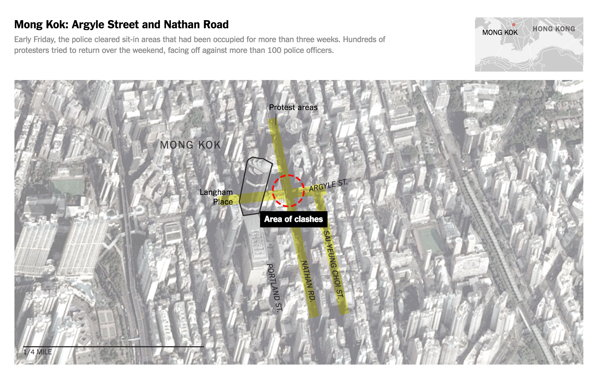衛星地圖
標示詳細地點與區域，特別適合突發新聞
忘記做尺標換算，忘記加上註解
地勢圖
WaPo: ‘Himalayan Viagra’: Tibet’s gold rush may be coming to an end 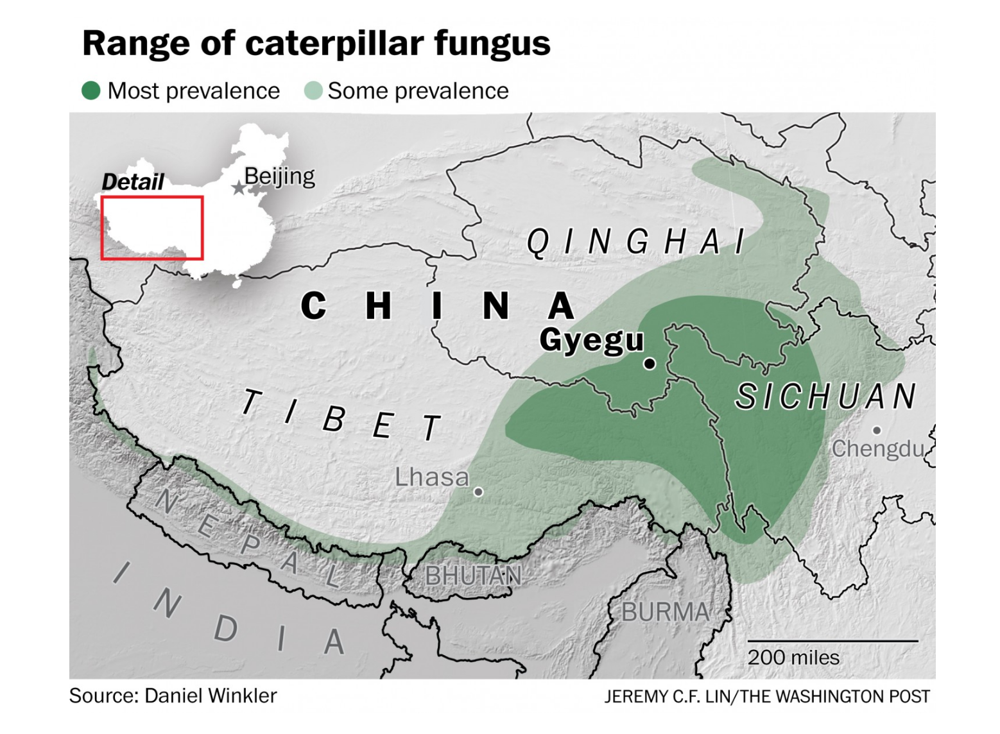地勢圖
WaPo: ‘A very dangerous place to be': Huge California blaze forces 82,000 evacuations
地勢圖
畫面太亂沒重點
地勢圖: 標示方法
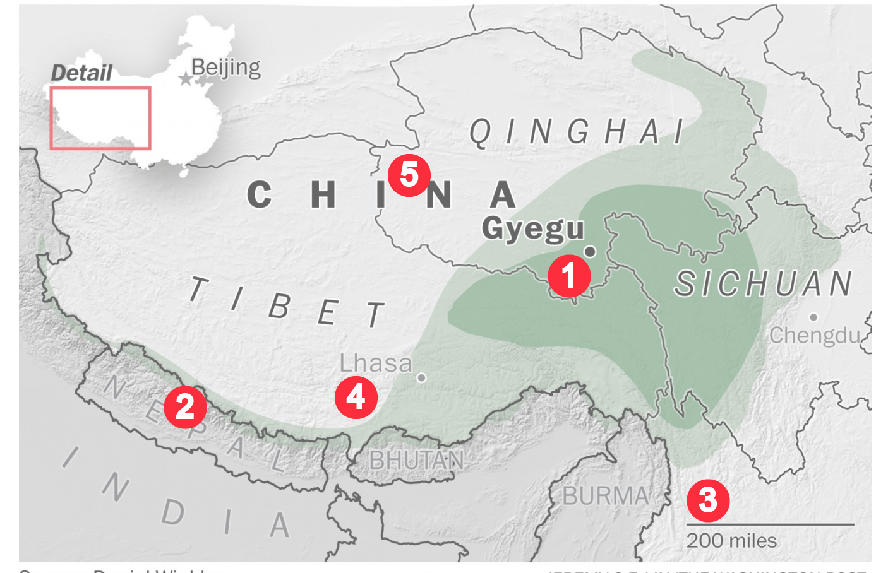地點標示圖
WaPo: 10 great places to eat in Philadelphia, for convention-goers and the rest of us 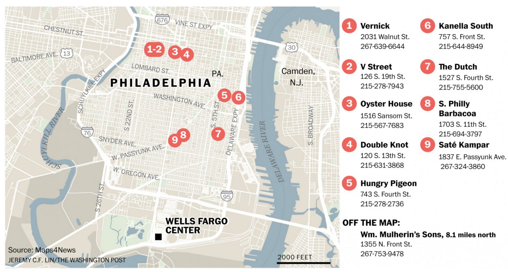地點標示圖: 也可以來拿做新聞分析
NYT: High Lead Levels Were Detected in Nearly 400 Flint Homes, and There May Be More 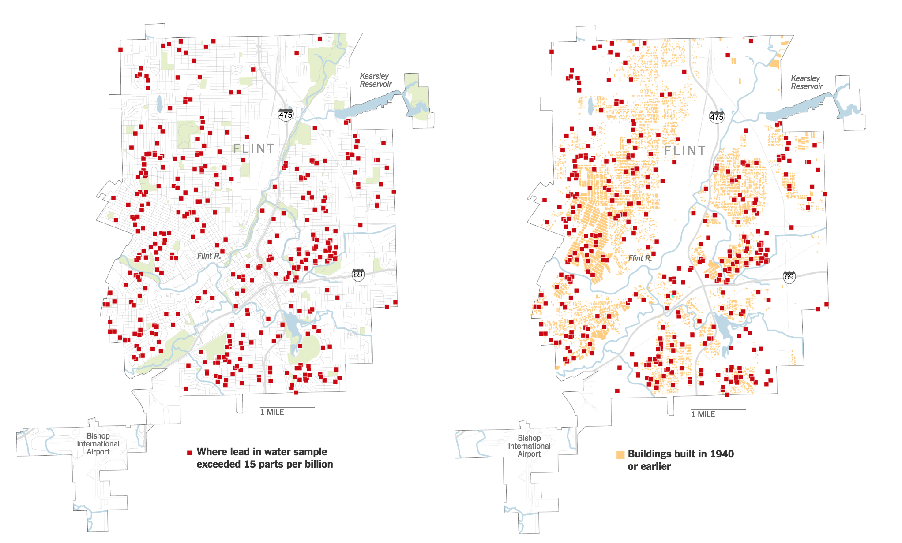地點標示圖
表現 密集程度與分佈。適合座標重要性高以及區域難以整合的新聞。
點的重疊
Choropleth
Texas Tribune: Obamacare Health Plans to Get Special Label 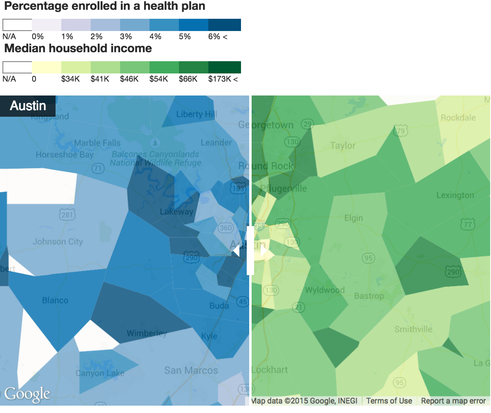Choropleth
WaPo: Louisiana flooding is the country’s ‘worst natural disaster’ since Hurricane Sandy, Red Cross says 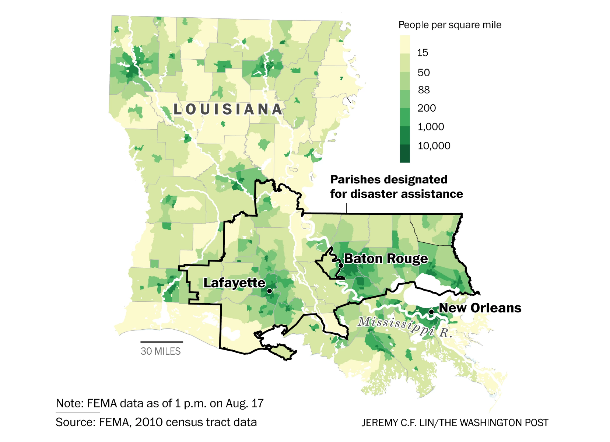Choropleth
WaPo: Despite a big year for women in politics, national legislatures are still dominated by men 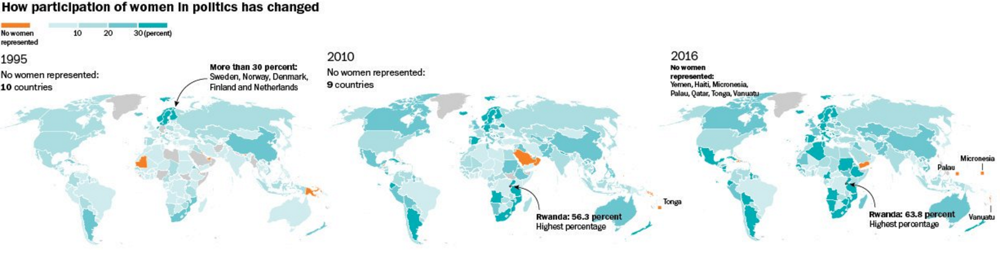Choropleth
展示統計標準化後的每個位置的不同處
如果地域太小就很難比對, 完全忘記要做統計標準化
Choropleth
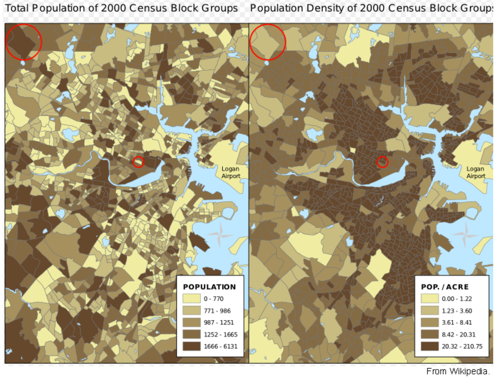等比圓圈地圖
WaPo: The world of coups since 1950 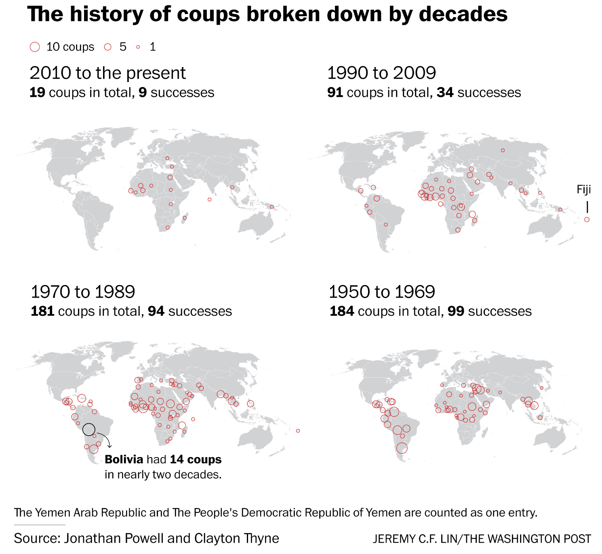等比圓圈地圖
ONA 15 Attendees: Demographic Breakdown 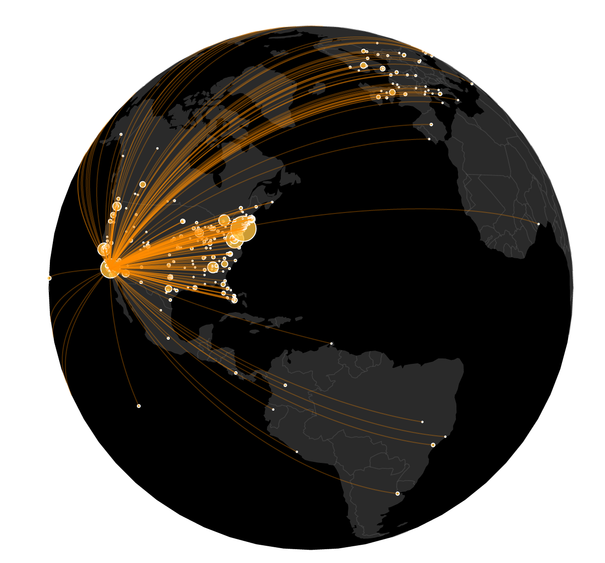等比圓圈地圖
精準地展示數據範圍。不用做統計標準化，直接用原始數據即可。
一般讀者有時候看不懂，因為人類不擅長讀面積。完全變成人口圖。如果沒有變化的話其實有時候看起來滿無聊的。
等比圓圈地圖
人類不擅長讀面積 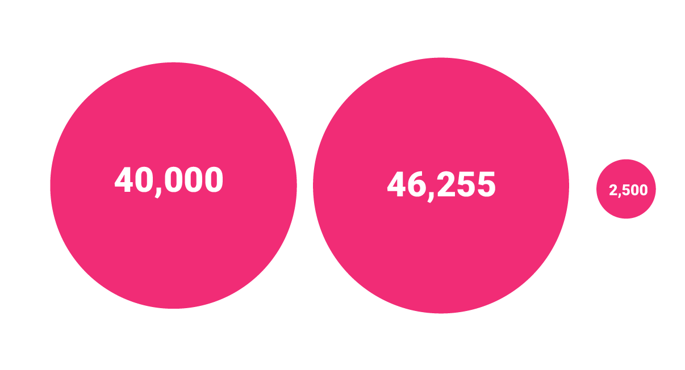熱圖
WaPo: What you need to know about the Zika virus 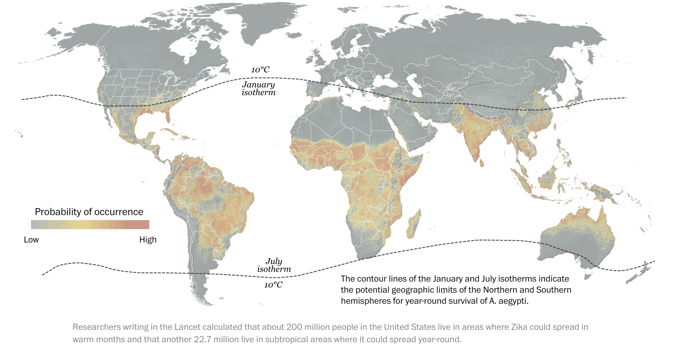熱圖
展示集中區域，將注意力放在數據與地理邊界沒辦法完全吻合的區塊。
顏色和分顏色的臨界點沒有統計意義。
Cartogram
WaPo: What a real ‘Brexit Britain’ would look like 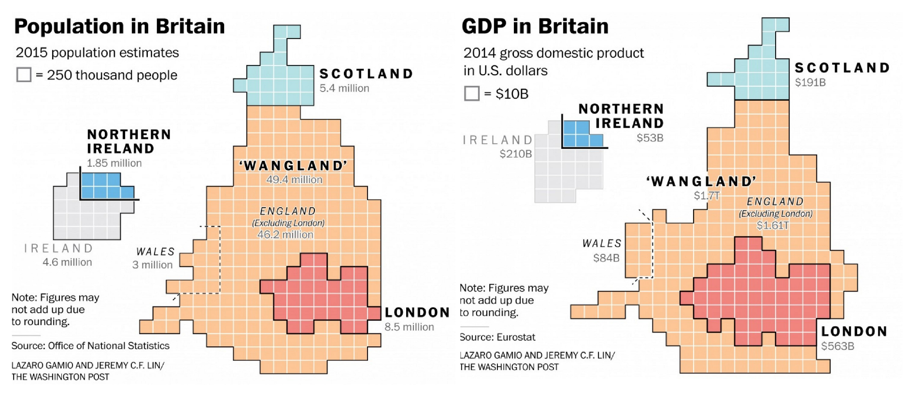不是有了經緯度就一定要做成地圖
WaPo: Trump claims his golf courses are worth tens of millions. Until the tax bill arrives 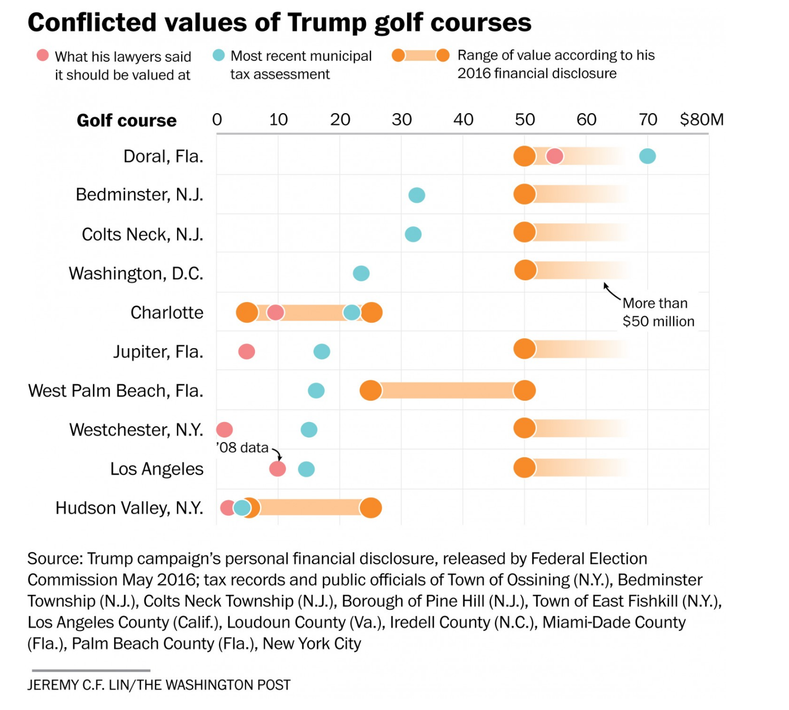不是有了經緯度就一定要做成地圖
WaPo: The world is getting better at paid maternity leave. The U.S. is not 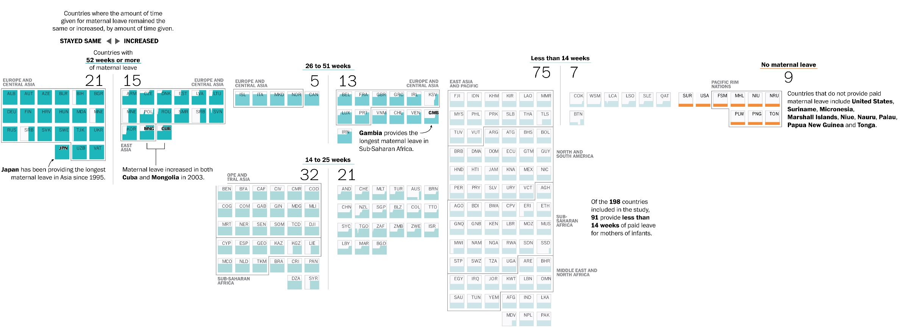資源
Mapping: QGIS, Adobe Illustrator, D3.js (interactive or small-multiples), Leaflet, Mapbox
Projections: Projection Wizard
Geocoding: Batch Geocode
Geo-data: Natural Earth, 30-Meter SRTM Tile Downloader, Earth Explorer, NASA
Simplify Geo-data : Mapshaper
資源
Reading: 如何製作新聞地圖, 記者可以怎麼運用地理資訊系統QGIS？, Building a U.S. Election Basemap with D3.js and TopoJSON
Who to follow: NYT Graphics, Post Graphics, Tim Wallace, Gregor Aisch, Derek WatkinsLazaro Gamio, Laris Karklis